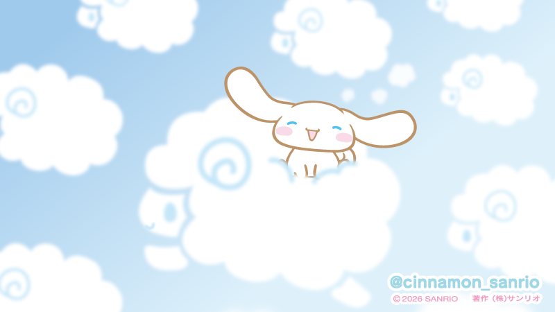

耳朵是软的
那对垂下来的大耳朵，风吹过的时候会轻轻晃，像刚出炉的肉桂卷。
CINNAMOROLL · シナモロール
你有一对像奶油卷一样的大耳朵，飞起来的时候， 整片云海都会让路。这是我写过最认真的一封情书 —— 写给一只小狗。

认真写的，不是凑数。
那对垂下来的大耳朵，风吹过的时候会轻轻晃，像刚出炉的肉桂卷。
别人抬头看天，我抬头找他。云是他家，也是他带我去的远方。
眼睛弯成两道小弧线，笑得那么用力，好像下一秒就要奔过来抱住你。
尾巴短短一截，走路晃悠悠，却总想着替别人把麻烦扛走。
睡不着的夜里，只要想到云上还有一只在替我看星星，就没那么难熬了。
以前蓝色只是蓝色，现在是我一抬头就想笑的那种颜色。
从今天起，每一天都值得记下来。
第一次认真看他笑了很久，然后决定要做一个只属于他的页面。
把整片天都刷成了奶油蓝，装上云朵，写下这些字。
想带他去更远的地方 —— 至少，去更多人的屏幕上。
希望这个页面还在，而我还是会为了那对耳朵心动。
点一下云，把话托给风。
“如果温柔有形状，
那大概就是一只长着大耳朵、住在云上的小狗。”